★SGL User's Manual
★SOUND TUTORIAL
★SGL User's Manual
★SOUND TUTORIAL
図2-20 I/O Module ウィンドウ
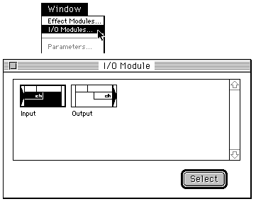
図2-21 DSP入出力モジュールの配置
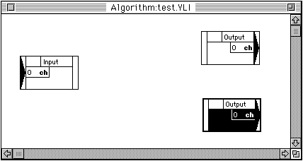
図2-22 Effect Module ウィンドウ
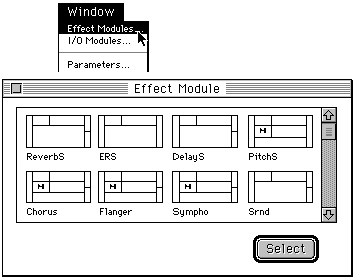
図2-23 エフェクトモジュールの配置
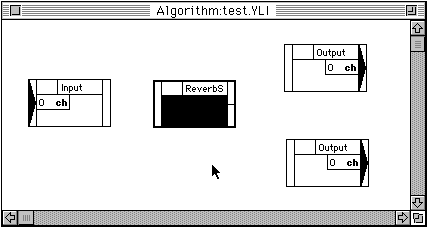
図2-24 モジュール間の結線
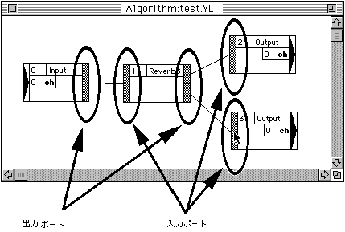
図2-25 「リンク結果情報」ダイアログ
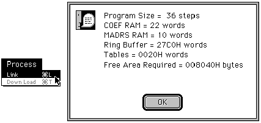
図2-26 リングバッファサイズの選択
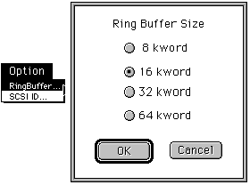
図2-27 ターゲットへのダウンロード
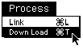
図2-28 リバーブモジュールのエディット
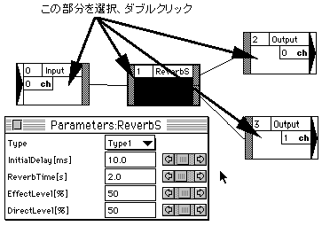
図2-29 入出力モジュールのエディット
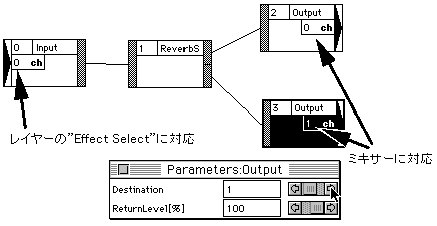
図2-30 モジュレーション系のエフェクト
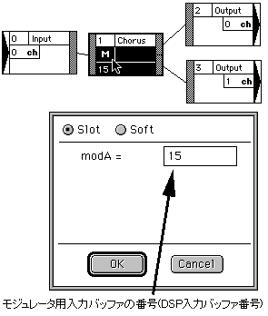
★SGL User's Manual
★SOUND TUTORIAL